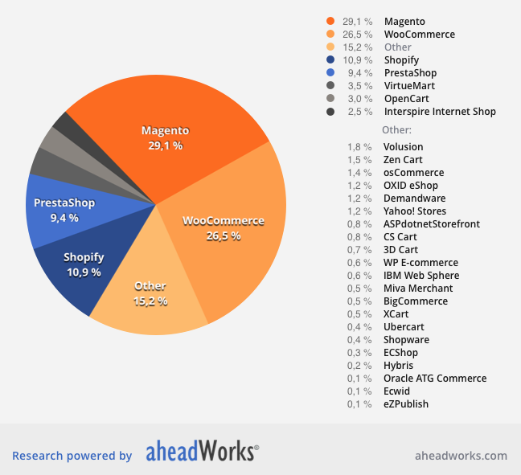

Nagu oled kindlasti juba aru saanud, siis eelistame veebipoodide loomiseks kasutada Magento Community platvormi. Magento on kõige populaarsem e-poe platvorm maailmas, kuid on veel teisigi levinud platvorme, mida siinses postituses Magentoga kõrvutame. Olgu öeldud, et käesoleva postituse eesmärk ei ole upitada ega maha teha üht või teist veebipoe platvormi. Tahame anda ülevaate statistikast ja trendidest, mis lähtuvad reaalsetest omadustest ja kasutusest, ning ühtlasi selgitada, miks Magento Community meile kõige paremini sobib.
Platvormivalik on üks olulisemaid otsuseid, mis enne veebipoe loomist teha tuleb. Selle valiku langetamine võib olla keeruline ja segadusttekitav. Selleks, et valitsevast olukorrast ülevaade anda oleme välja valinud mõned tuntumad ja laialt kasutatavamad e-poe platvormid ning võrdleme neid Magento Communityga. Blogipostitus ei püüa olla erinevate platvormide süvaanalüüs, vaid pigem valikul määravaks saavate omaduste võrdlus.
Lisaks Magentole vaatleme järgmisi e-poe platvorme:
Sellise valiku oleme teinud lähtuvalt erinevate platvormide turuosade jaotusest, mida on kujutatud järgmisel graafikul (diagramm on pärit siit).
Nagu graafikult näha, siis Magentol (arvestatud on nii Magento Communityt kui ka Enterprise’i) on 29,1 protsendi suurune turuosa, teisel kohal on WooCommerce 26,5 protsendiga. Seega on Magento maailmas enimlevinud e-poe platvorm.
Postituse järgnevas osas võrdleme populaarsemaid platvorme Magentoga. Toome välja vaadeldavate platvormide head ja vead.
WooCommerce’i puhul on tegemist WordPressi plugin‘iga, mis võimaldab ühe kodulehe funktsionaalsusena luua ka väikese e-poe.
Nii WooCommerce kui ka Magento on avatud lähtekoodiga platvormid, mis tähendab, et need on tasuta ning lähtekoodi on võimalik muuta. Üldine arvamus on, et WooCommerce’i on lihtsam kasutada kui Magentot. See väide võib tõepoolest paika pidada, sest seoses Magento rohkearvuliste funktsionaalsustega on süsteemil ka hulga rohkem konfiguratsioone, mida hallata. Samas kogenud Magento kasutajale tundub see ilmselt kõik imelihtsana ning ilmselt kehtib sama ka WooCommerce’i puhul.
Asjaolu, et Magento on iseseisev e-kaubanduse platvorm ning WooCommerce WordPressi plugin tähendab seda, et võrreldes Magentoga on WooCommerce’il vähem funktsionaalsusi. Näiteks toetab Magento ristmüügi ja lisamüügi võimalusi ning pakub paremaid toodete organiseerimise ja filtreerimise lahendusi.
Me usume, et WordPress on hästitoimiv kodulehe loomise platvorm (oleme isegi loonud suurel hulgal WordPressi kodulehekülgi ja teeme seda jätkuvalt) ning WooCommerce hea plugin, kuid see sobib kõige paremini väikese e-poe loomiseks, näiteks kui äri on alles alustamas või kui e-pood on pigem äri lisategevus ning sisaldab vähesel hulgal tooteid. Kui tooteid on juba rohkem, siis on neid efektiivsem hallata Magentos.
Nagu eelnevast selgus, siis on Shopify populaarsus tõusuteel. Platvormi kasutatakse pigem väiksemate e-poodide loomiseks. Shopify üheks tugevamaks küljeks on selle lihtne ja intuitiivselt kasutatav kasutajaliides. Samuti on Shopifyl nagu Magentolgi palju valmisteemasid, millest osad on tasuta ja teised tasulised.
Erinevalt Magentost ei ole Shopify puhul tegemist vabavaraga, vaid tasulise teenusega. Shopify tootekataloogi süsteem on üsnagi kohmakas, eriti kui e-poes on suuremal hulgal tooteid. Samuti on Shopify platvormi funktsionaalsuste valik üsna väike. Kõige olulisem funktsionaalsus, mis Shopifyl hetkel puudub, on keele- ja valuutavahetuse võimalus. Kuna platvorm on pärit USAst (kusjuures nagu Magentogi), siis on ainus keelevalik inglise keel ja ainus valuuta USA dollar. Eesti (või tegelikult ükskõik millise teise Euroopa riigi) e-poe tegijatele on tavaliselt väga oluline, et e-poe keelt oleks võimalik muuta. Isegi kui esialgu tegutseb pood vaid ühel turul, siis äri edenedes ja kasvades võib tekkida vajadus mitmekeelse lehe järele, kus saab arveldada erinevate valuutadega. Magentol on need võimalused esindatud.
PrestaShopi puhul on tegemist tasuta vabavaralise platvormiga, mis on mõeldud väikeste ja keskmises suuruses e-poodide loomiseks. Platvormi sisuhaldust peetakse üsnagi lihtsaks ja mugavaks.
Magento eeliseks PreastaShopi ees on aga kindlasti SEO-sõbralikkus. Magentot tundes on e-poodi võimalik muuta palju omanäolisemaks, sest võimalusi on rohkem kui PrestaShopis. Mõlemad platvormid pakuvad mitmeid tasulisi ja tasuta plugin‘eid, kuid Magento tasuta plugin‘ite valik on suurem. Samuti on Magento kasutajate kogukond tunduvalt suurem kui PrestaShopi oma, mis ühtlasi tähendab paremat kasutajatuge.
Eelneva informatsiooni kokkuvõtvamaks esitamiseks oleme loonud tabeli, mis võrdleb väljatoodud e-poe platvorme.
Seega on meie hinnangul e-poe platvormide paremusjärjestus järgmine:
Magento on vabavaraline platvorm, millega tuleb kaasa palju kasulikke funktsionaalsusi. Magento eelisteks on stabiilsus, turvalisus, skaleeritavus ning SEO-sõbralikkus. Magentot peetakse pigem keeruliselt kasutatavaks platvormiks, kuid leiame, et Magento Community on e-poe loomiseks hea valik just sel juhul, kui platvormi installeerimise, konfigureerimise ja hooldusega tegelevad oma ala eksperdid.
Algne artikkel, mille autoriks on ka antud HTML lehe autor, on pärit siit.